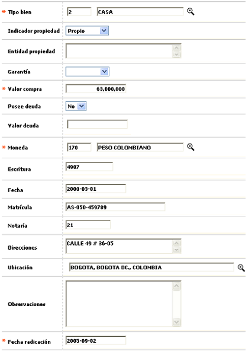
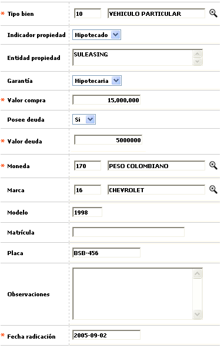
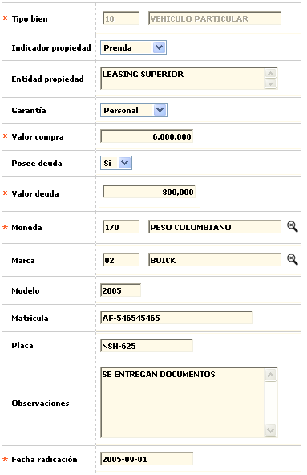
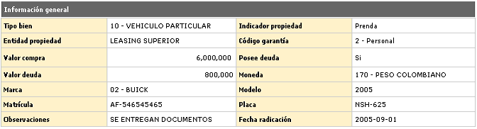

Novedad bienes del cliente
En este formulario invocado desde la opción consulta de clientes, a través del hipervínculo Financiera en el bloque Información de bienes, la entidad puede efectuar el ingreso o modificación de la información básica relativa a los bienes o activos poseídos y reportados por los clientes y mantener así actualizada la información del mismo.
Esta información puede ser de utilidad para la entidad por ejemplo al momento de evaluar o calificar al cliente respecto de los bienes que respaldan o garantizan cualquier crédito que le sea aprobado.
El formulario contiene los enlaces: Actualizar, Eliminar, Adicionar y Detalle.
Adicionar: Al activar ese enlace se despliega un formulario que dependiendo el tipo de bien, contiene campos diferentes.
Si el bien seleccionado corresponde a un 'Bien raíz' el formulario desplegado es el siguiente

Si el bien seleccionado es de tipo diferente a 'Bien raíz' los campos Escritura, Fecha, Notaría, Dirección y Ubicación no se muestran y a cambio se despliegan los campos Marca, Modelo y Placa.

Descripción de campos
Tipo bien |
Campo obligatorio que contiene lista de valores de la cual se selecciona el tipo de bien que reportado por el cliente. |
Indicador de propiedad |
En estos campos tipo combo se puede seleccionar entre Hipotecado, Prenda o Propio la condición de propiedad que el cliente tiene sobre el bien a la fecha en que se registra la información. |
Entidad propiedad |
Si el bien se encuentra Hipotecado o en Prenda, en este campo alfanumérico de 60 posiciones se puede registrar el nombre de la entidad financiera, persona jurídica u otra a nombre de quien se encuentra constituida la garantía sobre el bien reportado. |
Garantía |
Campo tipo combo que permite seleccionar entre Hipotecaria o Personal la clase de garantía que recae sobre el bien reportado. |
Valor compra |
En este campo obligatorio de hasta 14 enteros y 2 decimales se registra el valor de compra del bien reportado. |
Posee deuda |
Campo tipo combo en el que se puede seleccionar entre Si o No el bien ya fue cancelado en su totalidad por el cliente. |
Valor deuda |
En este campo que se vuelve obligatorio cuando se ha indicado que el bien Si posee deuda, se registra en hasta 14 enteros y 2 decimales el valor actual de la deuda que se encuentra por cubrir sobre el bien reportado. |
Moneda |
Campo obligatorio con lista de valores del cual se puede seleccionar la moneda en la cual se encuentra expresada el valor del bien reportado por el cliente. |
Escritura |
En este campo alfanumérico de hasta 10 posiciones, no obligatorio y que aplica para los bienes raíces, se registra el número o referencia asociado a la escritura, o título valor que señala o indica la propiedad y/o posesión del bien o activo. |
Fecha |
Campo no obligatorio y que aplica para los bienes raíces, en el cual se registra en formato YYYY-MM-DD la fecha en la cual se otorgó la escritura que acredita la propiedad del bien. |
Matrícula |
En este campo alfanumérico de 10 posiciones, no obligatorio y que aplica pra los bienes raíces se registra el número de matrícula inmobiliaria del bien relacionado reportado. |
Notaría |
Campo alfanumérico de 10 posiciones, no obligatorio y que aplica para los bienes raices en el cual se registra el número o referencia asociado a la notaría en que se elevó la escritura, o título valor que señala o indica la propiedad y/o posesión del bien reportado. |
Dirección |
En este campo alfanumérico de 60 posiciones, no obligatorio, y que aplica para los bienes raices se registra la nomenclatura correspondiente al bien inmueble reportado por el cliente. |
Ubicación |
Campo con lista de valores de la cual la entidad puede seleccionar la ubicación geográfica correspondiente a la dirección del bien reportado por el cliente. |
Marca |
Este campo que aplica para bienes tipo vehículos u otros, posee lista de valores de la cual se selecciona la marca de vehículo particular o público poseído por el cliente. |
Modelo |
Campo numérico de hasta 4 dígitos que aplica para bienes tipo vehículos u otros y en el cual se registra la fecha de fabricación o ensamble. |
Matrícula |
En este campo se registra en caso de aplicar el número de matrícula del bien diferente a bien raíz. |
Placa |
Campo alfanumérico de 15 posiciones en el que se registra la combinatoria de letras y números que identifica la placa del vehículo reportado por el cliente |
Fecha de radicación |
En este campo obligatorio se registra en formato YYYY-MM-DD la fecha en la cual se solicitó el cambio o adición de la información del bien y que puede ser una fecha anterior a la actual del sistema, facilitando el ingreso de novedades de fechas anteriores. |
Actualizar: Si el usuario selecciona un registro e invoca la opción Actualizar se despliega un formulario en el cual el único campo NO modificable es el Tipo de bien.

Detalle: Si el usuario selecciona un registro e invoca la opción Detalle se despliega un formulario con toda la información del registro y en el cual ninguno de sus campos es modificable.
